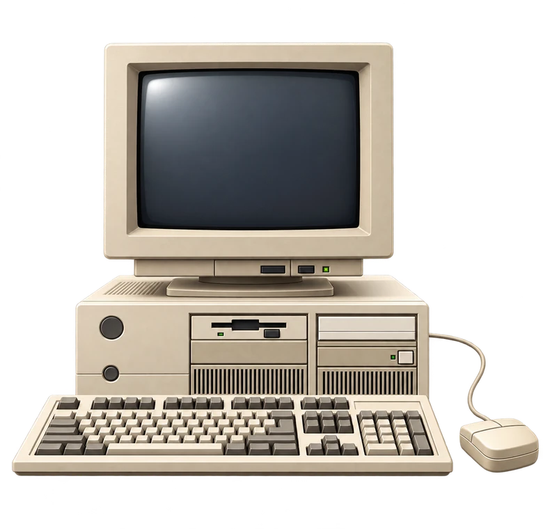
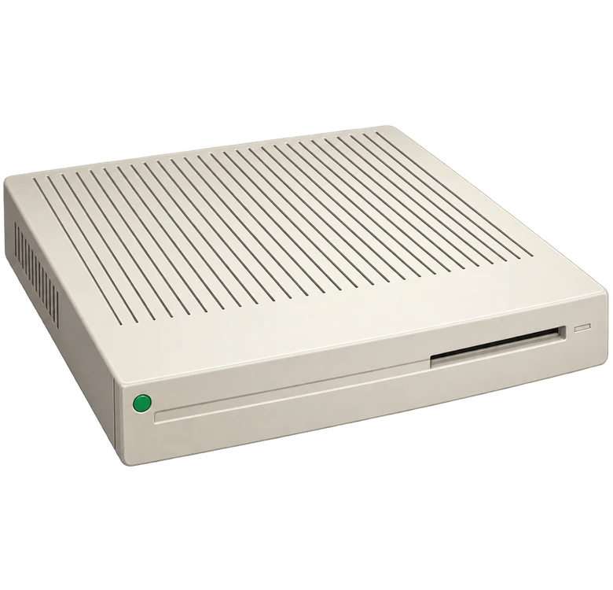
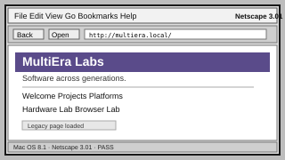
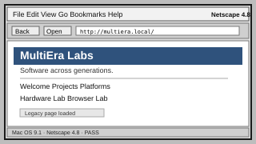
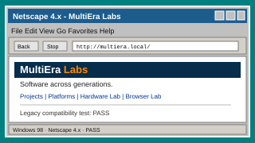
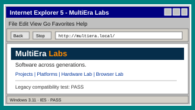
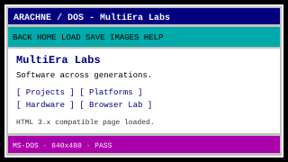
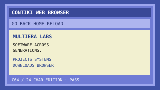

G15Control
macOS App & WoW Integration
- Logitech G15 LCD Unterstützung
- Timer, Stoppuhr, Countdown
- World of Warcraft Datenanzeige
- Ingame-Addon (Classic, TBC, MoP, WotLK, Midnight)
- Benachrichtigungen (iMessage, WhatsApp, E-Mail u. v. m.)
Wir entwickeln, testen und dokumentieren Software, Web-Technik und Hardware über mehrere Computergenerationen hinweg.
macOS App & WoW Integration
Web wie damals – heute verfügbar
Unser erstes freigegebenes DOS-Diagnoseprogramm: CPU, Speicher, PCI, ISA/PnP, MCA und TXT-Berichte. Read-only für Hardwareeinstellungen.
Projekt & Download ...Die eigene Win16-Edition von MHProbe befindet sich in fortgeschrittener Entwicklung. Noch kein öffentlicher Windows-Build.
Weitere Projekte →
1992 · XGA-2 · SCSI
REAL HARDWARE›1993 · 68K · SCSI
REAL HARDWARE›
1992 · 68K · PDS
REAL HARDWARE›1986 · 8-Bit
REAL HARDWARE›2003 · PowerPC G5
IN BESTAND›DOS / Windows PCs
Laptops u. v. m.






Software, Tools, Browser und Anleitungen für alle Plattformen.
Zu den Downloads ...Geplante Projekte und zukünftige Erweiterungen.
Zur Roadmap ...Unsere Mission: Software und Web-Technik über Generationen hinweg funktionsfähig, testbar und dokumentiert halten.
Mehr erfahren ...